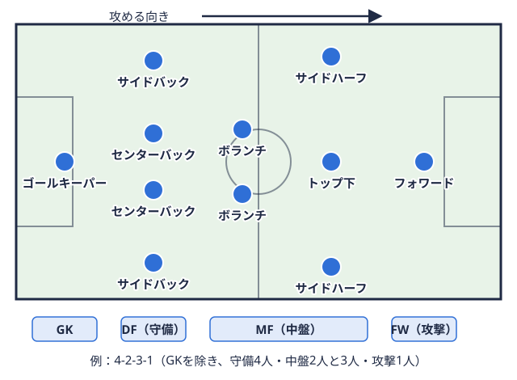
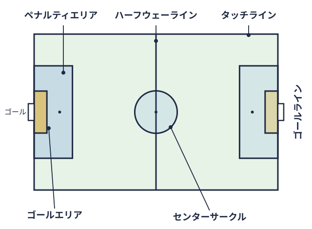
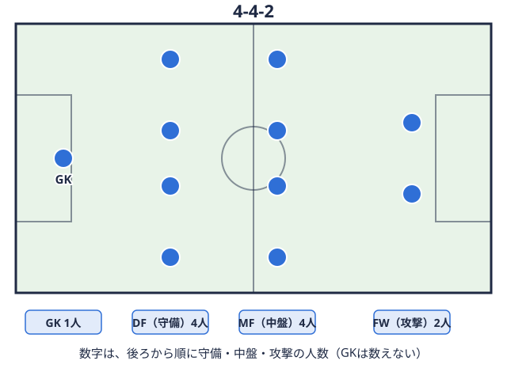

技術・戦術 2026-10-20
サッカー ボランチの役割とは｜大学サッカーで求められる動き方
大学のサッカー部に入ってから「ボランチ中盤の中央で、守備をしながら後ろから攻撃を組み立てる選手。攻守のバランスを取る役。 
ボランチとはどんなポジションか
ボランチはポルトガル語で「舵取り」を意味する言葉です。Jリーグ公式サイトの解説では、ボランチは守備と攻撃をつなぐ役割を担い、守備時には相手の鍵となる選手を抑え、攻撃時にはチームの起点になるポジションとして紹介されています。同じ位置の選手は、ディフェンシブハーフ、センターハーフ、アンカーなどと呼ばれることもあります。呼び方はチームや指導者によって異なるため、「ボランチ」と「アンカー」の違いが気になる場合は、自分のチームでどう使い分けているかを確認しておくと混乱を避けられます。
Jリーグ公式のポジション解説でも、中盤の中央に位置するこのポジションは、相手の攻撃を封じつつ後方から攻撃を組み立てる役割を持つと説明されています。つまり、守備専門でも攻撃専門でもなく、その両方の接点に立つポジションだと捉えるとイメージしやすくなります。
守備面での役割
ボランチの守備での仕事は、ディフェンスラインのすぐ前でスペースを管理することが中心です。チームの守り方によって細部は変わりますが、一般的には次のような場面が挙げられます。
- 相手の攻撃の芯を止める: 相手のトップ下中盤の選手のうち、攻撃の最前線の選手のすぐ後ろでプレーし、チャンスを作ったりシュートを狙ったりする役。用語辞典で見るや、ボールを受けに降りてくるフォワードに自由にプレーさせない
- こぼれ球を回収する: クリアやブロックの後に落ちてくるボールを拾い、相手の二次攻撃を防ぐ
- ディフェンスラインとの距離を保つ: ラインと中盤の間が空きすぎないよう、味方の位置を見ながら間隔を調整する
- カバーリング: センターバック守備の選手のうち、ゴール前の中央で相手の攻撃の選手を止める役。背が高く体の強い選手が多い。用語辞典で見るやサイドバック守備の選手のうち、左右の端で相手の攻撃を止める役。攻めるときは前に上がり、ゴール前へボールを蹴り込む。用語辞典で見るが前に出たとき、空いたスペースを埋める
これらの動きには、広い範囲をカバーする走力と、1対1で相手を自由にさせない対人の強さが必要だとされています。ただし、ボールを奪いに行く判断が遅れたり、早すぎたりすると、ボランチの背後のスペースを使われやすくなります。奪いに行くのか、遅らせて味方の帰陣を待つのかという判断は、日々の練習や試合での経験を通じて少しずつ磨かれていく部分です。
攻撃面での役割
攻撃では、ボランチはチームの起点になります。ディフェンスラインからボールを受けて前線に配球する、サイドに展開して攻撃の方向を変える、といった動きがその代表です。
- ボールを受ける位置取り: 相手のプレッシャーから少し距離を取り、味方がパスを出しやすい角度を作る
- パスの出しどころの選択: 縦に入れるのか、いったん横に動かして相手のブロックをずらすのかを判断する
- ロングフィード: 相手のラインの裏やサイドの深い位置へ、正確なボールを届ける
- 前線への関与: 攻撃が進んだ場面では、ペナルティエリアゴール前にある大きな長方形の区画。ゴールを守る選手（ゴールキーパー）が手を使えるのは、この中だけ。

用語辞典で見る付近まで顔を出して攻撃に厚みを加える
Jリーグ公式サイトの解説では、柴崎岳選手の例として、正確なパスと絶妙なタイミングでの飛び出しが紹介されており、パス精度と攻撃のタイミングを見極める判断力が重視されるポジションだと読み取れます。現代のサッカーでは、攻撃時にボランチが前線へ出て行くことで相手の守備ブロックにズレを生じさせることが期待される場面もあるとされています。ただし、チームによって「ボランチは後ろに残る」と決めているところもあります。ここも、自分のチームの約束事を確認しておくと安心です。
ダブルボランチの組み合わせを理解する
ボランチを2人置く形をダブルボランチと呼びます。ディフェンスラインのすぐ前に2人を配置するフォーメーション選手の並べ方。4-4-2のように、ゴールキーパーを除き、後ろから守備・中盤・攻撃の人数を並べて表す。 
| タイプ | 特徴 | 求められること |
|---|---|---|
| 組み立て役（司令塔タイプ） | 配球やゲームメイクが中心 | 視野の広さ、キック精度 |
| 潰し役（守備的タイプ） | ボール奪取やスペース管理が中心 | 走力、対人の強さ、予測 |
| バランス型 | 状況に応じて役割を入れ替える | 判断の速さ、相手との距離感 |
多くの解説では、片方が攻撃を組み立てる司令塔タイプ、もう片方がボール奪取に優れた守備的タイプという組み合わせが一般的だとされています。ただし、これは典型例であって、すべてのチームがこの形をとっているわけではありません。相方の長所を知り、自分がどちらの役割を多く担うのかを試合前に確認しておくだけで、試合中の迷いは減りやすくなります。たとえば「自分が前に出るときは相方が残る」「どちらかがセンターバックの間に降りる」といった約束を、事前に決めておくチームもあります。
大学サッカーでボランチに求められやすいこと
高校から大学に進むと、試合のテンポやフィジカルの強度が変わり、中盤の底でボールを持てる時間が短く感じられる場合があります。そのため、ボールを受ける前に周囲を見て、次のプレーを準備しておく習慣が重要になります。ここでいう習慣とは、特別な技術というより、ボールが来る前に首を振って味方と相手の位置を確認することを繰り返すことです。
また、大学サッカーは部員数が多く、同じポジションの選手同士が競い合う環境にあります。ボランチは攻守の両面で評価されやすいポジションであるぶん、自分の強みを明確にしておくことが、出場機会を争ううえで助けになる場合があります。強みが配球なのか、ボール奪取なのか、運動量なのかを、練習試合やトレーニングの映像を見返しながら整理してみてください。
リーグ全体の傾向を知ることも、参考になります。本サイトでは、関東・関西・東北・北信越の4連盟、それぞれ1部・2部の順位表やチームページ、記録室を公開しています。たとえば関東大学サッカーリーグ1部の順位表で上位と下位のチームの得失点を見比べると、攻撃的に点を取るチームと、少ない失点で勝点順位を決める点数。勝つと3点、引き分けで1点、負けると0点が加わり、合計が多いほど上位になる。用語辞典で見るを重ねるチームがあることがわかります。そうした違いは、中盤の底の選手にどんな役割が期待されやすいかを考えるヒントになります。関西のリーグを見たい場合は関西学生サッカーリーグ1部の順位表、各チームの戦績の詳細は関東1部の記録室から確認できます。なお、順位表は試合結果から集計されたもので、ボランチ個人の評価を直接示すものではありません。あくまでチームの傾向をつかむための材料として使ってください。
ボランチの力を伸ばす練習の視点
ボランチの能力を伸ばす練習は、特別なメニューだけではありません。日々のトレーニングの中で、次の視点を意識すると、同じ練習でも得られるものが変わります。
- ボールを受ける前の準備: ボールが来る前に周囲を見て、次にどこへ出すかを決めておく。パス練習でも、受ける前に首を振る回数を意識する
- 体の向き: 受けるときの体の向きによって、次のプレーの選択肢が変わる。半身で受けて前を向く動きを反復する
- ポジションを取る位置の確認: 守備時にボールとゴールの間に立てているか、攻撃時に味方が出しやすい角度に立てているかを、練習後に振り返る
- キック精度の反復: 近い距離のパスと、ロングフィードの両方を、的を決めて繰り返す
- 試合の映像を見る: 自分が関わった場面だけでなく、ボールから離れたときの動きも見返す
特に5つ目は、ボランチが「ボールを触っていない時間」にこそ多くの仕事をしているポジションだという点に関わります。ボールを触った回数だけで自分の働きを判断せず、ボールがない場面でスペースを埋められていたか、味方の逃げ場になれていたかを見直す習慣が役に立ちます。
他のポジションとの関係を整理する
ボランチを理解するうえでは、隣り合うポジションの役割も合わせて押さえておくと効果的です。センターバックの役割と求められる能力はセンターバックに求められる能力の記事で、各ポジションの全体像と向いている特徴はポジション適性・特徴の記事で整理しています。たとえばセンターバックの声かけによってボランチの立ち位置が決まる場面もあれば、ボランチの配球によってセンターバックの持ち上がりが生きる場面もあります。隣の選手との連係を意識することが、ボランチとしての評価にもつながりやすくなります。
コンバートを打診されたときに確認したいこと
高校までの経験とは違うポジションを任されたとき、まず確認しておきたい点を挙げます。
- 自分に期待されている役割: 配球なのか、ボール奪取なのか、攻守の切り替えの速さなのか
- 相方の特徴: ダブルボランチの場合、組む相手が司令塔タイプか守備的タイプか
- ディフェンスラインとの約束: 自分が前に出たとき、後ろは誰がカバーするのか
- 攻撃時にどこまで出てよいか: ペナルティエリア付近まで顔を出してよいのか、後ろに残るのか
これらを指導者や先輩と話し合っておくことで、試合中の迷いを減らしやすくなります。コンバート選手の担当する位置を変えること。例えば、攻撃の選手が守備の位置を任される。用語辞典で見るは「向いていないから外された」のではなく、チームの事情と本人の特徴の組み合わせから生まれる場合も多くあります。戸惑いがあるときは、まず役割を言葉にしてもらうことから始めてみてください。
まとめ
ボランチは、守備と攻撃をつなぐ「舵取り」の役割を担うポジションです。守備では相手の攻撃の芯を止めてスペースを管理し、攻撃ではチームの起点としてボールを動かします。ダブルボランチでは、組み立て役と守備的な役割の組み合わせが一般的に語られますが、チームごとに約束事は異なります。まずは自分の役割と相方の特徴、後ろとの距離感を確認し、ボールを受ける前の準備や体の向きといった基本を積み重ねてください。リーグ全体の傾向は、本サイトの順位表やチームページも参考にしながら確認できます。
出典
この部活・競技を応援したい方へ。
取材してほしい部活を募集中
オフシーズン・引退後に、長期インターンという選択
部活で培った力を実務で試す。16タイプ診断（30秒）で合う企業がわかります。